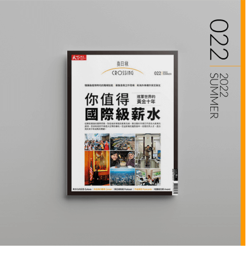

社群
在資訊快速增長的社群媒體上，具一致性的元素、樣式與排版規範，為《換日線》在數位傳播上更具辨識度。
版型規範

以延續《換日線》設計原則中「獨特」、「投射」、「流動」，重新定義社群圖像設計中的文字、色彩與圖形，以展現品牌視覺風格。
文字
為加強在社群媒體快速瀏覽的易讀性，將強調字體調整為無襯線的黑體，並以較輕、細的字重降低視覺上的壓迫感。
文字區塊標題
-
- 中文字體：思源黑體（Noto Sans TC）/ Light。
- 英文字體：Lato / Light。
-
- ※減少思源宋體（Noto Serif TC）的使用。
| 類型 | 層級 |
|---|---|
| 大標題 | 最大 |
| 中標題 | 大 |
| 重點強調標題 | 中 |
| 內容文字 | 一般 |
| 作者、標籤、說明文字 | 小 |
| 按鈕文字 | 小 |
色彩
以《換日線》的品牌色彩系統重新定義規範，減少其他色彩出現的頻率，維持 60：30：10 色彩比例，並設計深、淺兩個版本針對內容情境選擇使用。
淺色版本
深色版本色彩層級
| 文字使用 | 版本顏色 | 圖檔對應 | 色彩 | 層級 |
|---|---|---|---|---|
| 大、中標題、內容 | 淺色 | A | 黑色 | 重要 |
| 重點強調 | 淺色 | B | 橘色 | 強調 |
| 作者、說明文字 | 淺色 | C | 深灰色 | 一般 |
| 背景 | 淺色 | D | 淺灰色 | 背景 |
| 大、中標題、內容 | 深色 | A | 黑色 | 重要 |
| 重點強調 | 深色 | B | 橘色 | 強調 |
| 作者、說明文字 | 深色 | C | 深灰色 | 一般 |
| 背景 | 深色 | D | 淺灰色 | 背景 |
圖形
以拆解《換日線》的中文文字標誌，並擷取出「圓形」、「斜線條與直線條」、「階梯線條」三個形象元素，以呼應點、線、網概念。
下方列出對應的使用情境：
封面圖卡 / 使用情境「邊框」
國際字典圖卡 / 使用情境「引號」
問答題圖卡 / 使用情境「選項」
基礎版型
礙於版面這邊以淺色版本做示意。
封面系列圖卡
一般文字
人物
金句
國際字典
問答題

季刊

內頁系列圖卡
一般文字
直式照片
橫式照片
滿版照片
時間軸
季刊